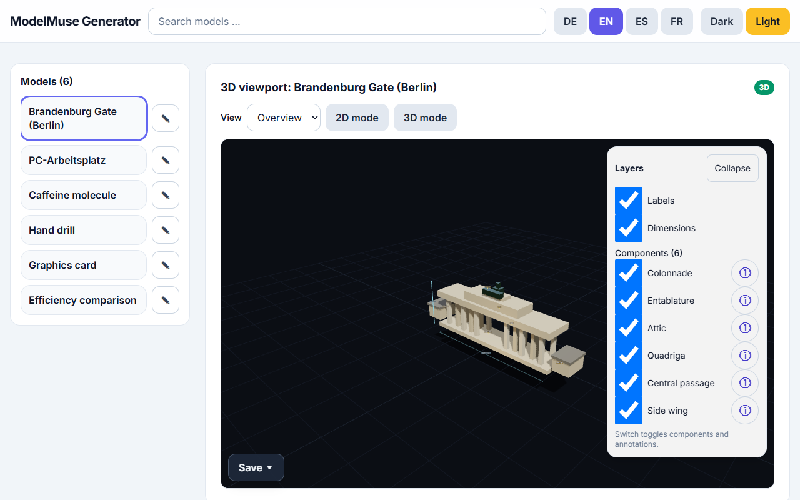

ModelMuse is a static single-page app for viewing and creating 3D and 2D educational models directly in the browser. There is no backend and no install step: a single HTML file is enough. It needs an internet connection at startup (3D/UI libraries and the font load from CDNs; provider APIs need network).

The app in English: lab library on the left, 3D viewer in the center, generator and revise panel on the right.
1. Feature overview
6 built-in labs: 5 × 3D (si-1, gpu-example, free-handbohrmaschine, chemie-koffein, arch-brandenburger-tor) plus 1 × 2D demo (demo-2d-chart). Each lab explains its components trilingually (German, English, Spanish).
Interactive 3D viewer: rotate/zoom, toggle components, info overlay with explanations.
2D renderers: SVG, Mermaid-style, chart, D3-style and KaTeX-style – diagram terms are routed to the 2D view automatically.
Docked windows: generate, queue, revise and component-info appear as stackable overlays and can be minimized.
Session library: view, adopt, import, export and delete your own models – with history (V1 … VX, max. 10 versions).
2. Generating models
Pick a provider and model; enter an API key if required (session only, see § 3).
Type a description (e.g. “hand drill, half sectioned”) and press Generate.
While one job runs, further jobs can be submitted – each lands as its own model in the library.
Below the model selection, a live cost/duration estimate from telemetry averages shows what to expect.
Your own OpenRouter key (openrouter.ai/keys), session only
Privacy: keys live only in memory or – with explicit consent – in sessionStorage. They are never written to the repository; telemetry and diagnostics never contain key material.
Reasoning depth:Standard / xhigh / max – max only where documented (1.3/wonder on Meta Muse, all three OpenRouter slugs); xhigh caps Contributor models and the Baseten path. No token-budget parameters are ever sent – there is intentionally no length limit.
4. Queue with ETA
Generate and revise share one queue. Each provider/model/reasoning combination has an ETA (60 s default, 240 s for heavy configurations and new OpenRouter models). The countdown ticks down, keeps counting past the ETA (“longer than expected · +{s} s”), reports the total duration and aborts at ETA + 120 s.
5. Exporting
3D views: GLB (label/measurement texts preserved as userData extras) and PNG screenshot of the current view.
2D views: SVG (with xmlns fix) and PNG.
Session library: export model source with a provenance header (no key material).
6. Telemetry (voluntary) & diagnostics
After a successful generation, a dialog asks whether to share a telemetry block (model, provider, reasoning, prompt, usage/HTTP codes, duration – keys redacted, memory only, never persisted). With a star rating and comment, the block can be copied and reported as an issue via a link button. Independently, copy diagnostics copies the redacted run diagnostics (mode, reasoning, HTTP status, token usage incl. reasoning tokens, retry flag) – safe for bug reports.
7. Limitations
Single file, but not offline: without network (CDN/providers) the app cannot start – check the connection and reload.
WebGL2 required for 3D: without WebGL2 there is a 2D fallback view (parts list with dimensions, marked auto-checked with limitations).
Estimates are estimates: cost/duration forecasts are telemetry averages, not guarantees.